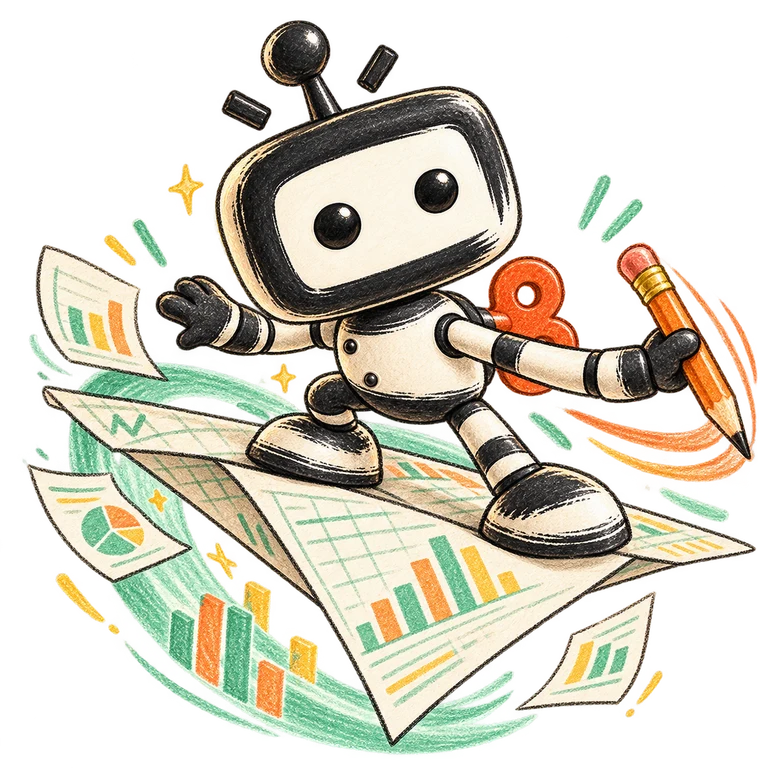
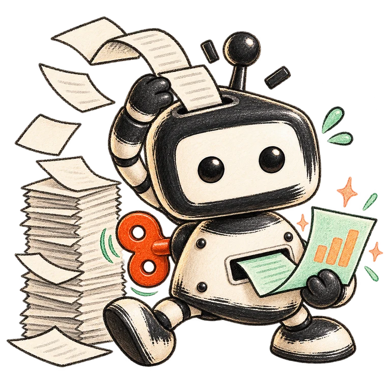

快速上手：5 分钟发出第一个任务
不需要先学完所有功能。走完下面 3 步，你就完成了从「装软件」到「AI 干活」的最短路径。
准备工作（一次性）
开始前向管理员确认两件事：
| 需要确认 | 说明 |
|---|---|
| 账号密码 | 内部统一开通（手机号或邮箱 + 密码），首次登录后建议尽快在「个人设置」里修改密码 |
| 所在组织 | 登录后侧栏顶部的组织切换器要选到公司组织（不是「个人」），权限和额度都跟着组织走 |
第 1 步 · 下载并安装
从内部发布渠道下载安装包
Windows 选 x64 安装包（.exe），macOS 选对应安装包。安装包由运维统一打包发布。
双击安装，遇到系统拦截点「仍要运行」
Windows 首次运行可能弹出蓝色「Windows 已保护你的电脑」提示：点击 更多信息 → 仍要运行，然后跟着安装向导走完即可。macOS 若提示「无法验证开发者」，在「系统设置 → 隐私与安全性」中点「仍要打开」。
首次启动，在左侧登录
启动后主界面是产品欢迎页，登录表单就在左侧侧边栏：输入管理员开通的手机号/邮箱和密码，点登录。登录成功后侧边栏会变成你的工作空间列表。
第 2 步 · 选好组织，进入工作空间
确认当前组织是公司组织
登录后留意侧栏顶部的组织切换器（「个人」/公司组织）。在个人组织下创建的内容不共享；公司日常协作请切到公司组织。
进入（或新建）一个工作空间
侧边栏中间的列表就是工作空间——每一位 AI 同事就是一个工作空间，有自己的人设、记忆和技能。第一次用直接新建工作空间，或进入管理员/同事已建好的。想批量管理组织内的 AI 同事，用侧栏「数字助手」入口。
第 3 步 · 发出你的第一个任务
用下面这个真实小任务练手，全程约 1 分钟：
点「新任务」，写任务描述
在当前工作空间点 新任务（或直接在输入框输入），说清三件事：做什么 + 有什么要求 + 最后要什么。不用学复杂的提示词。
模式保持「执行」
输入框左下角的模式选择器默认是「执行」——直接帮你做出结果，新手保持默认即可。另外三个模式的用法见第 2 章。
审批档保持「请求批准」
AI 在创建、修改内容前会先把准备执行的操作展示给你，由你点「允许」再继续。新手保持这一档能看清 AI 每一步；熟练后可按第 2 章放宽。
确认操作 → 查看结果 → 继续修改
AI 规划好操作后逐条向你确认；完成后打开生成的文档查看。结果不满意不用重发任务，直接在同一对话里继续说，例如「把三个目标改得更具体」。
界面导览：认识你的工作台
桌面端 = 左侧两级导航 + 主区域（任务对话 / 工作台应用）。日常操作 90% 集中在这些区域。
左侧两级导航
| 区域 | 内容 |
|---|---|
| 窄栏（最左一列） | 八个入口：问一句、办件事、协作沟通、资料空间、做项目、能力中心、场景市场、经营看板，底部还有客服入口。点谁切谁，一屏一个功能域 |
| 侧栏（第二列） | 顶部：组织切换器（个人 / 公司组织）；中部：工作空间列表（每位 AI 同事一格，可固定、筛选）；底部：当前设备状态（在线 / 忙碌 / 离线 / 本机）与工作目录 |
| 侧栏页签 | 任务（当前工作空间的对话列表，按今天/昨天/本周分组）、应用（工作台应用）、消息 |
主区域与输入区
| 区域 | 用途 |
|---|---|
| 任务对话区 | 和 AI 的对话流：进度、工具调用、审批卡片、产物（文档/表格卡片）都在这里，随时回来接着聊 |
| 输入框左下 | 两个选择器：工作空间身份（这次任务用哪位 AI 同事）+ 模式（执行/规划/PMO）；旁边是审批档入口 |
| 工作台应用 | 侧栏「应用」页签打开：在线文档、多维表格、浏览器、演示、终端等，AI 生成的产物也在应用里打开编辑 |
| 审批卡片 | 「请求批准」档下，AI 执行创建/修改前会展示准备做的事，看清后点「允许」或拒绝 |
模式怎么选（输入框左下）
执行：默认。直接做出结果：写文档、改文件、处理资料。
规划：只读调研后产出结构化方案，你在方案卡片上点「执行」才动手。目标没想清时用它。
PMO：以项目管理者身份拆解任务、调度多个子 Agent 协作，适合一摊子事。
问一句（窄栏入口）：纯问答，只调研分析不动手，查资料问概念最快。
审批档怎么选（输入框旁）
请求批准：默认。工作区内自动放行，出界/敏感/破坏性操作先问你。
自动通过：除风险红线外自动批，适合信任后的批量重复活。
全部允许：只拦灾难级命令。仅在明确风险可控时用。
注：PMO 群会话固定「请求批准」，不能放宽。
工作空间：什么时候新建一个
工作空间就是一位 AI 同事的身份卡：它有自己的人设与规则、记忆、技能携带集，并且会随共同完成的任务不断积累对你的理解。当某类工作反复出现且口径固定（周报、招标分析、数据整理），就为它建一个专属工作空间，把要求和经验固化进去；组织级统一管理用侧栏「数字助手」入口（新建、改名、设定人设与技能携带集）。
能力入口：技能从哪来
公司内置技能（含投标三环、政企招投标助手等）已随服务端开通。直接在任务里描述需求即可自动触发（如说「帮我做招标文件分析」）；想浏览与管理可用技能，走窄栏能力中心或侧栏「技能和连接器」。
日常通用场景：四件高频小事
四个场景覆盖日常办公的大头。示例指令采用官方推荐口径，照抄就能用。
场景 A · 在线文档：把想法和资料写成文档
适合：会议纪要、周报、方案初稿、制度整理。AI 可以直接创建和编辑文档，同事可以接着编辑，可回看历史版本并导出。
生成后不满意就在对话里继续说（精简开头、补充数据、调整顺序），不用重开任务；定稿分享给同事即可。
场景 B · 多维表格：把记录整理成表格
适合：待办跟进、客户反馈登记、投标商机台账、数据汇总。让 AI 建表、填内容、按条件筛选统计；整理完导出或分享协作。

场景 C · 浏览器：查资料、比信息
适合：查招标公告、政策、竞品资料。在工作台打开浏览器应用访问真实网页，把内容交给 AI 提取要点、汇总成表，抓到的结果直接回填文档或表格。

场景 D · 本地文件与资料空间
本地文件：让 AI 读你电脑里的文件夹
把目标文件夹设为该工作空间的工作目录（侧栏底部可见「执行根」），然后告诉 AI 要的汇总口径，让它逐个读取 → 提取 → 汇总 → 保存结果。附件也可以在发消息时直接挂「本地文件」。
资料空间：公司云文档的家
窄栏「资料空间」集中保存组织内的文档、表格与文件：按「全部 / 最近 / 分享给我」浏览，可搜索、可建子文档/子表格。跨设备打开同一份资源，改完自动同步。
投标实战：一条链跑完「分析 → 编写 → 审查」
公司已内置投标链条三个配套技能，对应投标的三个环节，按顺序使用：上一步的输出就是下一步的输入。直接在任务里描述需求即可触发对应技能。
招标文件分析
读懂招标文件：提取资格条件、否决条款、评分标准，产出响应矩阵和投标文件框架。
输出：清单 + 矩阵 + 框架
标书编写师
基于响应矩阵和框架逐章编写正文，交付结构完整、带目录的投标文件。
输出：投标文件 docx
标书合规审查
交标前最后防线：废标风险、评分点覆盖、报价一致性、产品证书一致性逐项核查。
输出：审查报告 / 清单
场景 E · 招标文件分析（决定投不投、怎么投）
目标：拿到招标文件后，先把「废标红线」和「得分点」全部拆出来，再决定投入多少资源。
在工作空间里新建任务，上传完整招标文件（PDF/Word），说「帮我做招标文件分析」。
AI 会逐条拆解并输出四份结构化结果：资格条件清单（我司是否满足）、否决条款清单（风险等级 + 需准备材料）、评分标准矩阵（分值 + 响应策略）、投标文件框架（章节结构）。
逐条确认标了「需人工确认」的项（AI 不会替你臆断），补齐材料后再进入编写环节。
延伸：还没拿到招标文件、先想找商机？直接说「帮我搜索最近一周 XX 领域的招标公告」会触发政企招投标助手，汇总成网页台账。
场景 F · 标书编写师（写出能拿分的正文）
目标：基于分析结果逐章编写，拿到一份结构完整、带目录、可直接排版交付的投标文件。
把响应矩阵、投标文件框架发给 AI（接着分析任务的对话继续也行），如有公司历史中标标书、方案素材一并上传——AI 会优先参考你认可的历史稿，而不是套通用模板。
先让 AI 出章节大纲并确认，确认后再逐章编写正文；每章写完可单独提修改意见。指定页数时 AI 会按章核对页数并补足实质内容。
需要把营业执照、资质证书、业绩合同等商务资料贴进对应章节时，直接上传并说明「贴到标书对应位置」，AI 会按内容类型插入框架对应章节。
交付物是 .docx 完整投标文件：保留框架章节编号、封面后带完整目录、黑体宋体规范排版。信息化/系统集成类项目自动启用行业专版（信创、等保等口径）。
场景 G · 标书合规审查（交标前必做）
目标：交标前把「会废标的问题」和「丢分的问题」全部找出来。
把正文草稿 + 招标文件（以及分析输出的资格清单、否决条款清单、评分矩阵）交给 AI，发起合规审查。
AI 逐项核查：资格与否决条款覆盖、评分点响应完整度、报价一致性（投标函/开标一览表/正文交叉核对）、产品与证书一致性（型号、证书编号、有效期、持有人）、格式与内容质量（索引式表述、重复内容检查）。
按审查报告逐条整改，改完必须回炉复审，确认风险清零后再定稿交付。
问题排查：按现象找下一步
先按下面对照现象自查，多数问题 1 分钟能解决；仍未解决再找运维（附录有渠道），带上报错截图。
登录不上，或提示需要重新授权？
- 确认装的是内部发放的安装包（连公司服务器）；从外部网站下载的版本连的是官方公共服务，账号不通用。
- 确认手机号/邮箱和密码正确；忘了密码走登录表单下方的找回流程，或找管理员重置。
- 确认本机能访问公司服务器：浏览器打开 Web 工作台入口（见附录），打不开就是网络问题，找运维。
- 提示接入的模型账号需要重新授权：按界面提示在弹出的授权页重新完成登录即可。
提示「无额度」或被限流？
- 先确认当前组织正确（个人 / 公司组织额度分开算）。
- 额度跟组织与成员规则走：超额会有明确提示；确需提高找管理员在运营管理台调整。
- 限流通常是短时间内请求过于密集：稍等几分钟再试，不要连续重试。
- 重新登录一次，让额度状态刷新。
AI 说「当前模式只读」或让我切换模式？
- 你可能在「问一句」（纯问答）或「规划」模式里让它改东西：这两类模式本来就只读。
- 按 AI 的提示，到输入框左下角的模式选择器切回「执行」再发一次。
- 规划模式产出的方案卡片上有「执行」按钮，点它即可自动进入执行，不必手动切。
提示设备离线，本地文件读不了？
- 看侧栏底部的设备状态：显示「离线」说明这台电脑与服务器断连，先检查网络。
- 本地文件只在拥有该文件的电脑上处理：换电脑后要把文件夹重新设为该工作空间的工作目录。
- 电脑休眠/锁屏可能掉线：保持客户端运行，重新联网后稍等自动恢复。
文档或表格一直「同步中」？
- 「连接中」「同步中」不代表已保存到云端：先保留未同步的重要内容，别关页面。
- 确认网络和账号正常；跨设备查看时核对打开的是同一份资源（资料空间里搜索确认）。
- 等状态变为「已同步」后，再到另一台设备核对内容一致。
消息、附件或任务发送失败？
- 先看失败的是哪一条：核对接收对象、当前组织，以及附件是否已上传完成。
- 消息失败：检查连接后重试同一条，不要反复新发相同内容。
- 任务失败：先读错误提示——附件上传失败、模型认证失败、无额度、限流要分别处理；确认原任务状态后再决定是否重试。
AI 说做完了，但生成的文件找不到？
- 回到原任务的对话查看产物卡片（文档/表格），点开确认内容和保存位置。
- 云文档去资料空间搜索；保存到本地的核对工作目录里目标文件夹和文件名。
- 导出后打开文件确认是最新版本；找不到就在原对话里让 AI 重新给出文件位置或再次导出。
AI 一直在等我确认，或提示没有权限？
- 「请求批准」档下这是正常流程：查看它准备执行的操作、目标和权限提示，判断后点允许或拒绝。
- 确认频率过高时，用输入框旁的审批档入口升到「自动通过」；PMO 群会话固定请求批准，属预期行为。
- 文档只能看不能改：请文档所有者核对你的访问权限——被分享 ≠ 有编辑权。
附录：入口地址与支持渠道
以下为当前服务器对外服务入口（2026-10-23 实测）。桌面端登录后自动连接，无需手动配置。
服务器入口一览
| 端口 | 服务 | 说明 |
|---|---|---|
13490 | Web 工作台 | 浏览器直接访问的日常工作台，与桌面端账号通用 |
13491 | 运营管理台 | 管理员用：成员、额度、权限配置 |
13492 | API 服务 | 后端接口（Django），桌面端/工作台的数据通道 |
13493 | 协作 WebSocket | 多人协作实时通道 |
13494 | 实时消息 WebSocket | 消息与通知实时推送通道 |
13483 | 桌面端应用服务 | 桌面端配套的 Web 应用入口 |
13495 | 本使用指南 | 就是你正在看的这个页面 |
获取支持
| 情况 | 找谁 |
|---|---|
| 使用问题 / 疑问 | 内部使用交流群，先搜索群历史，多数问题已被问过 |
| 账号 / 额度 / 权限 | 联系管理员在运营管理台处理 |
| 故障报修 | 联系运维，附上：发生时间 + 客户端版本 + 操作步骤 + 完整报错截图（敏感信息打码）；不要发送密码、验证码 |
| 安装包获取 / 更新 | 内部发布渠道统一下载，勿用外部来源 |